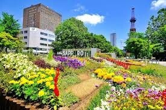
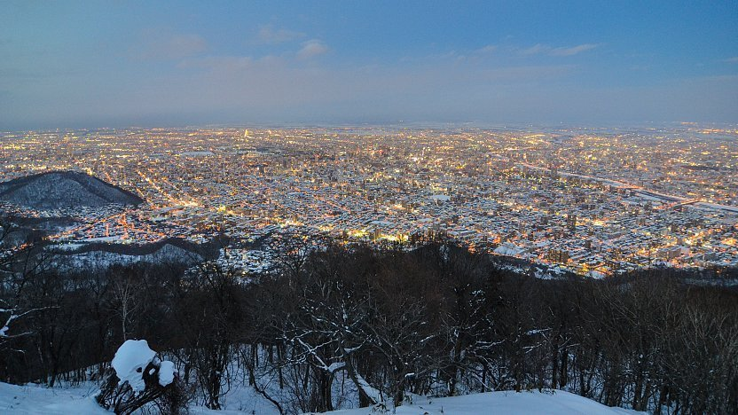

A snowy northern city known for festivals and landscapes
Sapporo, located in northern Japan, offers a completely different vibe compared to cities like Tokyo or Osaka. It is known for its wide streets, cooler climate, and famous snow festivals. The city feels more spacious and less crowded, with a strong connection to nature and seasonal beauty.


Cold, scenic, calm
Sapporo is great for those who enjoy winter, snow, and a quieter environment. It offers a unique lifestyle that stands apart from the fast-paced cities in Japan.